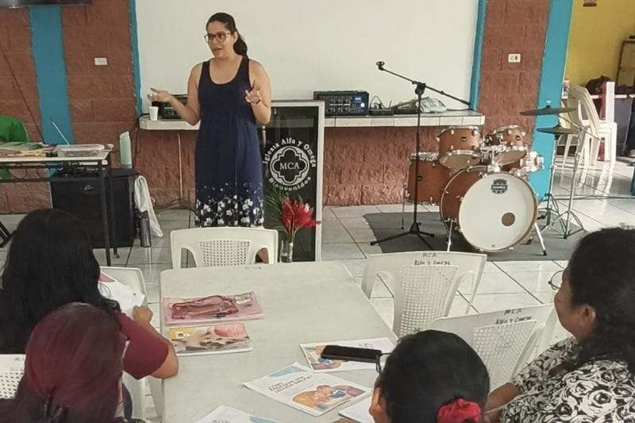
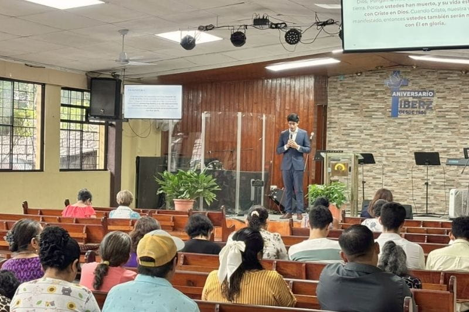

¡Hola amigos y familia! Con mucha alegría queremos compartirles un poco de lo que Dios ha estado haciendo en nuestras vidas durante los meses de septiembre y octubre. Si quieres conocer más sobre quiénes somos y cómo comenzó esta aventura, te invitamos a leerlo.
Esperamos que se encuentren muy bien. Nosotros seguimos agradecidos con Dios por Su fidelidad y por cada oportunidad que nos brinda para servirle en esta nueva etapa en El Salvador. También oramos para que el Señor continúe bendiciendo a cada una de sus familias.
Sirviendo junto a otros
Durante el mes de septiembre tuvimos la oportunidad de apoyar en la Actividad de Chicas organizada por Palabra de Vida El Salvador. Fue una bendición servir en el área de multimedia, así como colaborar en diferentes aspectos de logística y decoración.
Más allá de las tareas realizadas, disfrutamos mucho poder compartir con jóvenes, iglesias y hermanos que han sido parte de nuestro caminar. Cada conversación, saludo y momento compartido nos recordó el privilegio que tenemos de servir junto a la familia de Dios. Además, Neto tuvo la oportunidad de compartir la Palabra en nuestra iglesia local, una experiencia que recibimos con mucha gratitud y responsabilidad.


Llevando el evangelio a los niños
Durante octubre estuvimos apoyando en la Gira del Niño, visitando diferentes lugares y compartiendo el evangelio con muchos niños. Ver cómo ellos pueden comprender el mensaje de Jesús de una manera práctica, dinámica y cercana es algo que siempre llena nuestro corazón de alegría. Cada actividad nos recuerda la importancia de seguir sembrando la Palabra en las nuevas generaciones.
Además, dimos inicio a las capacitaciones para maestros de niños y líderes de jóvenes. Ahora también nos encontramos preparando los campamentos de niños y jóvenes que se realizarán en los próximos meses, orando para que Dios obre poderosamente en la vida de cada participante.
Una aventura que sigue creciendo
Como familia, seguimos viviendo esta nueva etapa con mucha ilusión.
Damos gracias a Dios porque ya hemos llegado a las 20 semanas de embarazo, lo que significa que estamos a mitad del camino para conocer a nuestro bebé. Cada consulta, cada semana y cada nuevo paso son recordatorios de la bondad de Dios hacia nosotros. Aunque todavía no conocemos si será niño o niña, estamos emocionados por todo lo que viene y esperamos poder compartir esa noticia muy pronto.
Gracias por acompañarnos con sus oraciones durante este tiempo tan especial. Significa mucho para nosotros saber que no caminamos solos.
Caminar juntos en la misión
Mientras comenzamos esta nueva etapa ministerial y familiar, recordamos una verdad que ha acompañado todo nuestro camino: la misión no se vive solos.
Gracias a las personas, familias e iglesias que han caminado junto a nosotros con sus oraciones, ánimo y apoyo constante. Cada muestra de acompañamiento nos permite servir con mayor libertad y enfocarnos en aquello a lo que Dios nos ha llamado.
Si deseas conocer más sobre nuestro ministerio o acompañarnos de manera más constante a través del apoyo mensual, te invitamos a visitar nuestra página Caminar Juntos en la Misión.
Acompañar la misiónGracias por tomarte el tiempo de leer y caminar con nosotros. Nos encantaría saber de ti; no dudes en escribirnos. Será un gusto orar por ti y tu familia.
Nuestra Agenda de Aventura Compartida
- Por la salud de Diana y de nuestro bebé durante el embarazo.
- Por provisión para el sustento de nuestra familia en esta nueva etapa ministerial.
- Por sabiduría y dirección en el ministerio que desarrollamos junto a Palabra de Vida El Salvador.
- Por los campamentos de niños y jóvenes que se realizarán en noviembre y diciembre.
- Para que el Señor siga transformando vidas a través del evangelio.
¡Continúa la aventura!
¿Quieres orar por nosotros o compartir algo?
Estamos aquí para escucharte. Escríbenos y cuéntanos cómo podemos orar por ti también.
Conecta con nosotros